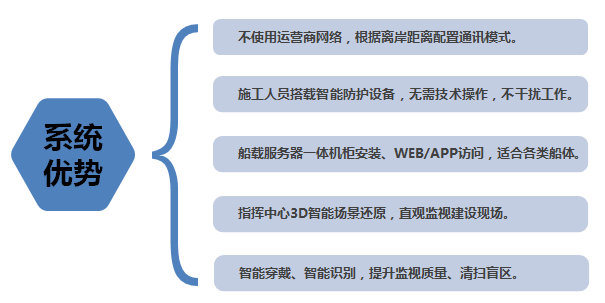
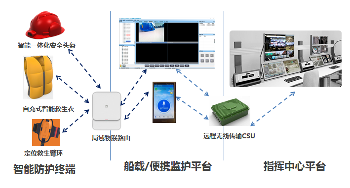
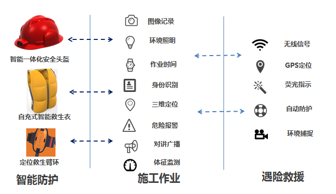
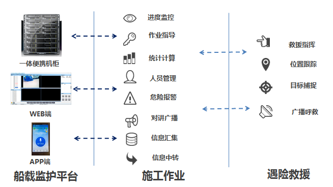
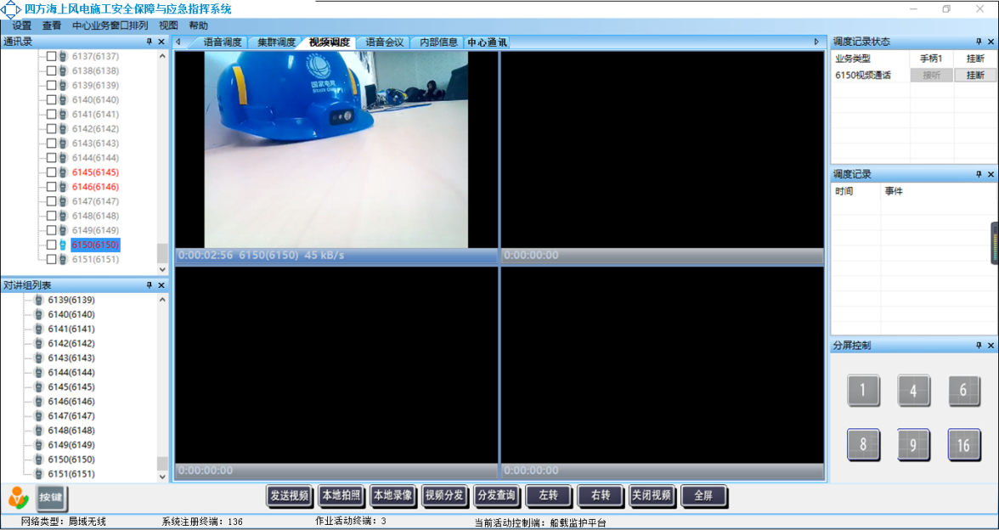
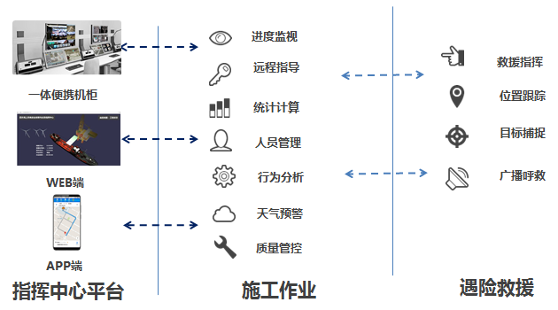
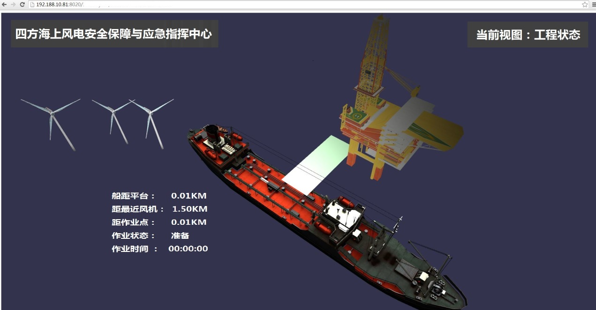
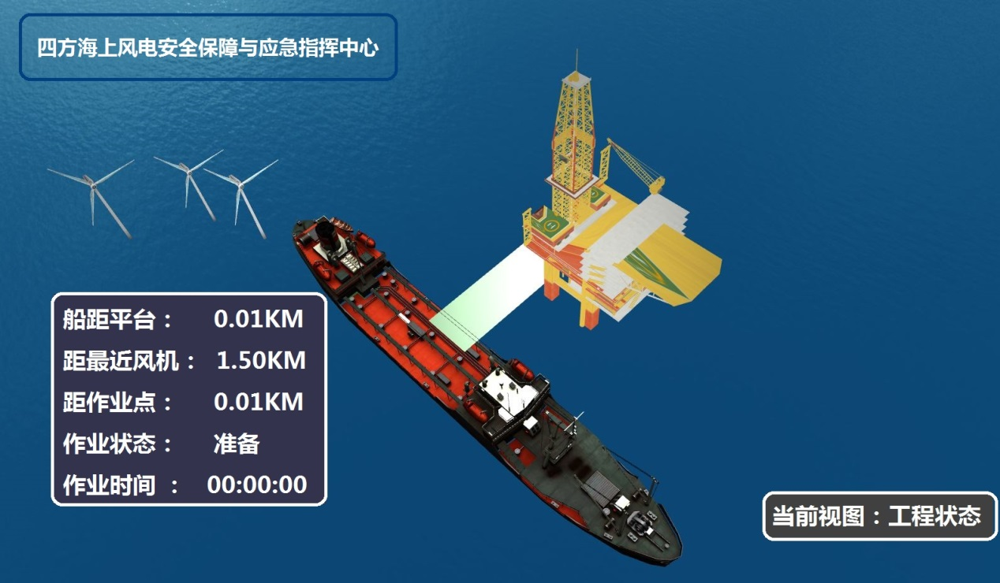
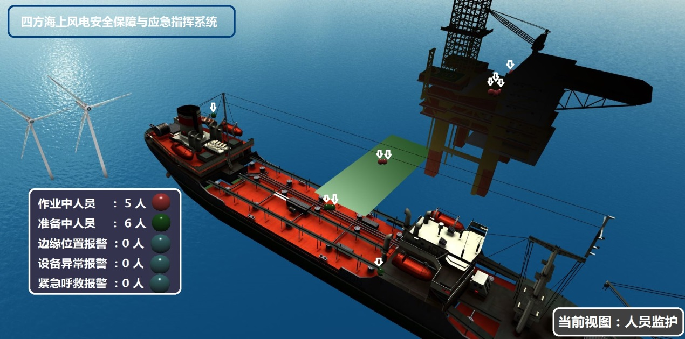

海上风电为新能源发展拉开了新的一页，风电行业走向新的高峰。在海洋环境中，风电的建设和运营面临新的问题，尤以建设过程中恶劣天气与环境造成的施工安全问题最为突出紧要。四方公司结合多年监控、通信、视频安防产品与技术积累，开发海上风电施工安全保障与应急指挥系统，为海上风电建设提供安全保障。

四方海上风电施工安全保障与应急指挥系统，为海上风电施工定制，跨越海上风电施工期的“三无、三多、二不便”的信息系统建设与使用障碍，实现施工过程的风险可控、远程可见、主动防护、智能作业。

四方海上风电施工安全保障与应急指挥系统采用智能可穿戴防护设备、物联网传输方式、智能识别技术等，与传统应急指挥系统相比具有多项优势。

四方海上风电施工安全保障与应急指挥系统采用三级结构，包括穿戴式智能防护终端、船载监护平台、指挥中心平台。系统配置灵活、多类设备可选，按作业区域气候环境、离岸距离、人员数量等特征配置。

智能防护终端采用多种设备配合形式，主动防护并透明化搜集现场信息，包括：智能一体化安全头盔、智能救生衣、手环等可穿戴智能防护设备，及低耗标记终端。穿戴防护设备具备安全防护、视频传输、远程协助、人员定位、主动预警、状态监测、身份识别能力。低耗标记终端提供危险区域标识、任务与危险反馈功能，具有自给电力、主动预警、主动传输、蓝牙抗扰、主动匹配的特征。

船载便携监护平台采用一体化小型机柜方式，WEB或APP方式使用，实时监护现场人员状态，提供危险告警、人员状态告警、营救辅助告警、现场交互、施工进度，包括：一体服务器、新型局域物联路由、远程无线传输CSU。作为四方公司特殊定制研发的船载传输设备，远程无线传输CSU具备自建网络、动态码率、可调带宽、中继处理等功能，支持0-40KM通讯，可无中继覆盖80%海上风电施工海域。


船载监控平台-视频监视对话
指挥中心平台采用WEB方式部署，与船载监护平台通信，获取施工信息、监视现场情况，采用信息展示、三维还原、智能分析方式，进行施工作业进度控制、人员管理、作业方式优化、远程指导功能，实现施工风险控制、作业安全辅助、紧急救援指挥。



指挥中心平台-施工进度查看

指挥中心平台-人员监控防护
★创新铸就四方，梦想点亮未来★
★Innovation Lights Our Future★
四方股份为您提供优质的解决方案
如有任何问题，请与四方股份解决方案与产品中心联系
技术沟通联络邮箱：chuyanjun@sf-auto.com
技术沟通联系电话：18515512632
封页图
封页摘要:
四方海上风电施工安全保障与应急指挥系统，为海上风电施工定制，跨越海上风电施工期的“三无、三多、二不便”的信息系统建设与使用障碍，实现施工过程的风险可控、远程可见、主动防护、智能作业.